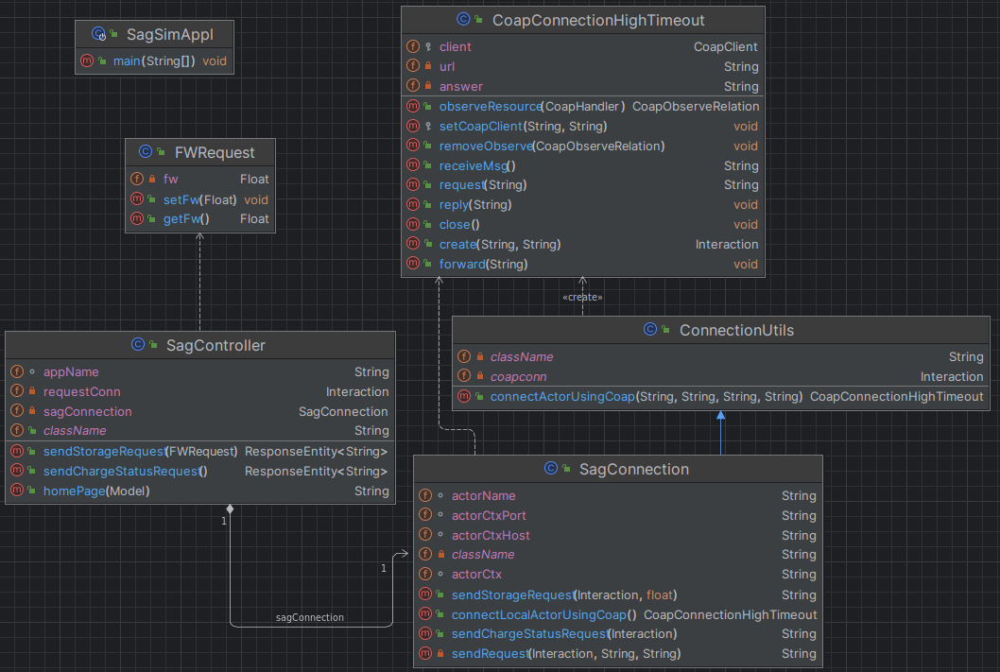
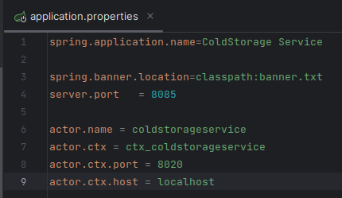
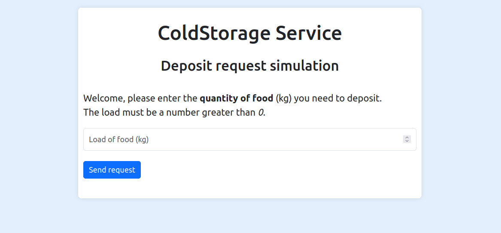

Introduction
Documento che tratta la realizzazione della ServiceAccessGUI, in relazione all'analisi presente nello Sprint1.
Requirements
La ServiceAccessGUI, in questa fase di sviluppo, deve permettere di:
- inviare una richiesta di deposito
- richiedere lo stato della propria richiesta
- resettare l'interfaccia al termine di un ciclo di interazione
Non è di competenza in questa analisi la gestione del ticket number.
Requirement analysis
Dobbiamo realizzare un componente software che permetta di simulare richieste di deposito presso il CSS. In particolare, avremo bisogno di un'applicativo che ci permetta di:
- effettuare una richiesta di deposito verso il CSS, specificando la quantità di chilogrammi di cibo FW
- visualizzare la risposta relativa alla richiesta appena effettuata (accettata o rifiutata)
- solo in caso di richiesta accettata, richiedere lo stato del carico e visualizzare la relativa risposta
Messaggi
Si riportano di seguito i messaggi necessari per l'interazione tra SAG e CSS, presi dal modello dei requisiti definito nello Sprint0.
| Mittente | Destinatario | Tipologia messaggio | Identificatore | Payload | Significato |
|---|---|---|---|---|---|
| serviceaccessgui | coldstorageservice | Request | storerequest | storerequest(FW) | Richiesta di storage di FW chili di cibo. |
| coldstorageservice | serviceaccessgui | Reply | loadaccepted | loadaccepted() | La richiesta di deposito è stata accettata. |
| coldstorageservice | serviceaccessgui | Reply | loadrejected | loadrejected() | La richiesta è stata rifiutata. |
| serviceaccessgui | coldstorageservice | Request | chargestatus | chargestatus() | Viene richiesto lo stato del carico depositato. |
| coldstorageservice | serviceaccessgui | Reply | chargetaken | chargetaken() | Il deposito è stato preso in carico dal transport trolley, il camion deve spostarsi da INDOOR. |
| coldstorageservice | serviceaccessgui | Reply | chargefailed | chargefailed() | Ci sono stati problemi durante la presa in carico del deposito. |
Problem analysis
Per quanto riguarda le tecnologie d'implementazione, pensiamo che un applicazione web sia l'ideale per realizzare questo componente software, per via della sua comodità d'uso e per la possibilità di passare ad un contesto distribuito in modo molto semplice.
In generale, la bassa complessità di questo componente software ci permette di non avere un'analisi del problema complessa, potendoci basare su quella dei requisiti appena redatta. In fase di progettazione si avrà quindi un focus sulle specifiche tecnologie di implementazione.
Test plans
Nello Sprint2, a monte di un'analisi completa di questo componente software, verrà implementato un piano di test completo.
Project
ServiceAccessGUI
Come anticipato in fase di analisi del problema, si è pensato di implementare questo componente software come un'applicazione web.
Abbiamo deciso di sviluppare l'applicazione utilizzando il framework Spring Boot, sia poiché permette di aggiungere funzionalità in poco tempo, sia allo scopo di uniformare lo stack tecnologico utilizzato dal progetto nel suo insieme (utilizzeremo Spring anche all'interno del MapConfigurator).
Architettura dell'applicazione
Comunicazione con il ColdStorageService
Questa applicazione serve per accedere ai servizi forniti dal ColdStorageService. La comunicazione con esso è quindi di cruciale importanza.
KEY-POINT: La comunicazione tra i due componenti (ServiceAccessGUI e ColdStorageService) tramite il protocollo Coap; la scelta è guidata dal fatto che la nostra software house ha già sviluppato classi e interfacce per implementare un concetto generale di connessione tramite questo protocollo nella libreria unibo.basicomm23 per comunicare con gli attori qak.
Gestione del timeout
Nell'implementazione del CoapClient disponibile alla nostra software house, il timeout per la ricezione di una risposta ha un tempo fisso di 1 secondo, dopo il quale la comunicazione ritorna un errore.
Dal momento che il messaggio chargestatus inviato dalla SAGSim può ottenere una risposta anche dopo parecchi secondi, a causa del movimento del tempo necessario al robot per spostarsi, un timeout così basso risultava un problema per l'implementazione.
KEY-POINT: É stata realizzata la classe CoapConnectionHighTimeout che estende Connection e imita la CoapConnection di unibo.basicomm23 per poter impostare il tempo di timeout a 15 secondi nel CoapClient da essa gestito.
Diagramma delle classi
Nell'immagine seguente viene mostrato il diagramma UML delle classi del back-end dell'applicazione Web.
Prendiamo in analisi i singoli componenti:
- SagController: WebServer Controller dell'applicazione definito tramite annotazione del framework SpringBoot. Si occupa di inizializzare l'applicazione definendo un osservatore sull'attore interessato; funge poi da mediatore tra UI e back-end per l'invio al ColdStorageService della richiesta di deposito e della richiesta relativa allo stato del carico depositato.
- SagConnection: componente che si occupa di stabilire, tramite
unibo.basicomm23, una connessione Coap con l'attore interessato nel progetto ColdStorageService; permette poi di implementare la comunicazione con l'attore stesso relativamente alle due richieste sopra definite. - ConnectionUtils: definisce una nuova CoapConnection utilizzando la nuova classe sopra analizzata per la gestione del timeout.
- CoapConnectionHighTimeout: analizzata in precedenza.
Configurazione
Alcuni importanti parametri dell'applicazione possono essere configurati dal file application-dev.properties (per l'ambiente di sviluppo) e/o dal file application-prod.properties per l'ambiente di produzione; al momento i due file contengono le stesse informazioni ma sono stati creati entrambi perché in futuro sarà necessario discriminare i due ambienti per il deployment tramite docker (uniforme con le apposite task gradle create).
Oltre a poter configurare il nome dell'applicazione che apparirà in alto nella pagina web e il banner da mostrare in console, sono presenti:
- server.port, per configurare la porta sulla quale apparirà la pagina web
- actor.name, per definire il nome dell'attore da osservare e al quale verrà inviata la richiesta di deposito
- actor.ctx.*, per specificare tutte le informazioni relative al contesto in cui è presente l'attore d'interesse
Front-end
Per la realizzazione della grafica dell'applicazione si fa uso di Bootstrap, una libreria utile per realizzare pagine web reattive e mobile-first, con HTML, CSS e JavaScript;

L'applicazione permette di inserire una quantità numerica che rappresenta i kg di carico da depositare e, previa validazione dell'input con eventuale toast di errore, invia la richiesta al ColdStorageService.
A questo punto possono presentarsi tre casi:
- richiesta accettata: l'utente viene notificato dell'accettazione della richiesta, indicandogli di richiedere lo stato del carico, una volta raggiunta la INDOOR.
In questo contesto, due casi sono possibili:
- se passa troppo tempo, il messaggio viene dato per perso, avvisando l'utente e ricaricando la pagina
- arriva il messaggio di presa in carico, che viene mostrato in pagina, per poi ricaricarla
- richiesta rifiutata: l'utente viene avvisato del rifiuto e la pagina web si ricarica, permettendo una nuova interazione.
- errore in fase di richiesta: se la richiesta non va a buon fine o passa troppo tempo, l'utente viene notificato e la pagina web si ricarica, permettendo una nuova interazione.
Deployment
Per il deployment ci si basa sulla sezione all'interno dello Sprint1.
Relativamente alla ServiceAccessGUI, riportiamo il comando per l'avvio dell'applicazione.
ServiceAccessGUI (progetto Spring)
cd ./projects/unibo.serviceaccessGUI
gradlew bootRun